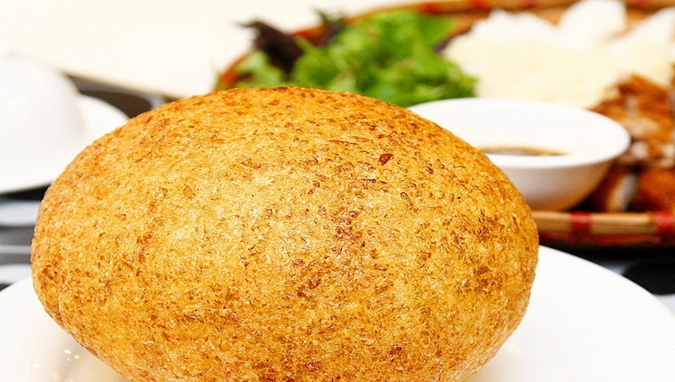

Gà Nướng - Xôi Chiên Phồng
Gà nướng xôi chiên phồng (Đồng Nai) – Nét riêng của ẩm thực Nam Bộ
Tuy không phải là món cổ truyền nhưng xôi chiên phồng đã trở nên phổ biến khắp Nam ngoài Bắc. Có lẽ chính xuất xứ món ăn tại Đồng Nai, cùng với bàn tay chế biến đầy tinh hoa của đầu bếp nơi đây đã khiến cho người ta mỗi khi nhớ đến món xôi chiên phồng, lại tấm khắc khen xôi chiên phồng ở Đồng Nai là ngon nhất.
Xôi chiên phồng căng tròn như quả bóng, cắn miếng giòn rụm, vẫn giữ được độ dẻo của nếp, vị ngọt nhẹ của đường, ăn cùng gà nướng mật ong dậy mùi ưng lắm.
Nguyên liệu chính làm xôi chiên phồng là nếp, nhưng khác với các loại xôi khác, sau khi đồ chín nếp xôi chiên phồng còn được giã và nhồi nhuyễn chung với đường và đậu xanh sau đó mới đem chiên cho phồng lên.

Món xôi chiên ngon thì bánh phải phồng tròn và vàng đều, nếp không được cứng mà phải dẻo, có độ dai vừa phải. Xôi khi cắt ra chiều dài phải mỏng vàng đều hai mặt và không nhão. Muốn được như vậy khi nhồi phải nhồi thật tốt và khi chiên người đầu bếp phải biết cách ép và xoay miếng xôi thật khéo cho xôi nở đều, không bị méo mó hay chín không đều. Nhồi và chiên là hai khâu quan trọng nhất trong quá trình làm xôi.
Theo nhiều tài liệu thì xôi chiên phồng bắt nguồn từ Đồng Nai, từ năm 1952. Khi đó, có một người đầu bếp tình cờ trong một lần chiên xôi đã phát hiện thấy một góc của miếng xôi phồng to lên. Cả nhà ngạc nhiên xúm lại xem. Sau đó là những lần làm kế tiếp, người đầu bếp ấy đều chú ý để rút kinh nghiệm. Thế rồi món xôi chiên phồng đã được đúc kết ra từ khâu nấu xôi phải chín đều, không được nhão cũng không được khô; kế đến là khâu nhồi xôi, trộn đường, ép xôi, cách lật xôi khi chiên.

Người chiên phải kiên nhẫn, khéo léo và đều tay xoay trở xôi thì mới tạo được độ phồng tròn đều, xôi chín vàng cả phần ngoài lẫn bên trong, khi cắt ra không có phần xôi dư, cắn vào miếng xôi thấy giòn nhưng vẫn giữ được sự mềm mại của nếp, vị ngọt nhẹ của đường và mùi thơm của các thứ quyện lại.
Sau này, món xôi chiên phồng bắt đầu nổi tiếng ra nhiều tỉnh khác. Hiện nay xôi chiên phồng đã trở thành một món ăn nổi tiếng ở Việt Nam và còn được giới thiệu ra nước ngoài trong các buổi giao lưu ẩm thực đấy, tuy nhiên Đồng Nai vẫn là một địa điểm bán món xôi chiên phồng ăn với gà nướng nổi tiếng nhất